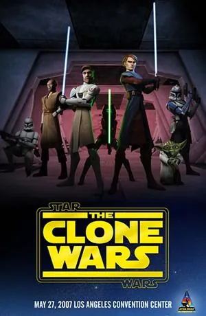

The genetics
Cloning is built into the premise. The Republic's army consists of clones grown on the planet Kamino from the genetic template of the bounty hunter Jango Fett and accelerated in their development, and the series gives these mass-produced soldiers names, personalities and moral agency, highlighting the human cost of a war fought with manufactured people. The Kaminoan cloners appear as cool professionals proud of their product. A squad of clones with genetic mutations that give them special abilities, the Bad Batch, is introduced and later got its own series. Ultimately the clone army is the instrument of Darth Sidious's plan: the series ends with the clones turning on the Jedi. The dossier on which this text rests gives few sourced details about the cloning itself; the series treats it as space-opera technology rather than science.
How genetics is portrayed
- Overall portrayal of genetics
- negative Cloning produces disposable soldiers bred for war and becomes the instrument of the villain's takeover; the series ends on the ominous fall of the Republic. Sympathy for the clones themselves does not make the cloning come across well.
- Outcome of the genetic intervention
- negative The clone army fights a long war in which clones die by the thousands, and at the end it turns on the Jedi and enables the Empire; the clones' individuality does not outweigh this ending.
- Kaminoan cloners
- neutral Aim: commercial, military (mixed). The Kaminoans produce the Republic's clone army from Jango Fett's template and take professional pride in their work; they supply an army that defends the Republic, as a product, and the series gives them little moral colouring. Affiliation 'other': a planetary cloning industry.
- Darth Sidious (Chancellor Palpatine)
- villain Aim: power (negative). The secret Sith Lord manipulates both sides of the war, with the clone army as the tool by which he destroys the Jedi and founds the Empire at the series' end.
The story
This animated series, created by George Lucas, is set during the Clone Wars between Attack of the Clones and Revenge of the Sith. Jedi Knights Anakin Skywalker and Obi-Wan Kenobi, with Anakin's Padawan Ahsoka Tano, lead the Galactic Republic's army of clone troopers against the droid armies of the Separatists under Count Dooku and General Grievous. Beginning as standalone episodes and growing into multi-episode arcs, the series covers battles, political intrigue, bounty hunters and the Mandalorians, while Darth Sidious, secretly Chancellor Palpatine, manipulates both sides to destroy the Jedi and found the Galactic Empire. The clones, all grown from the bounty hunter Jango Fett, emerge as individuals such as Captain Rex, and a squad of mutated clones, the Bad Batch, is introduced. The final season, the Siege of Mandalore, runs parallel to Revenge of the Sith and ends with the fall of the Republic as the clones turn on the Jedi.